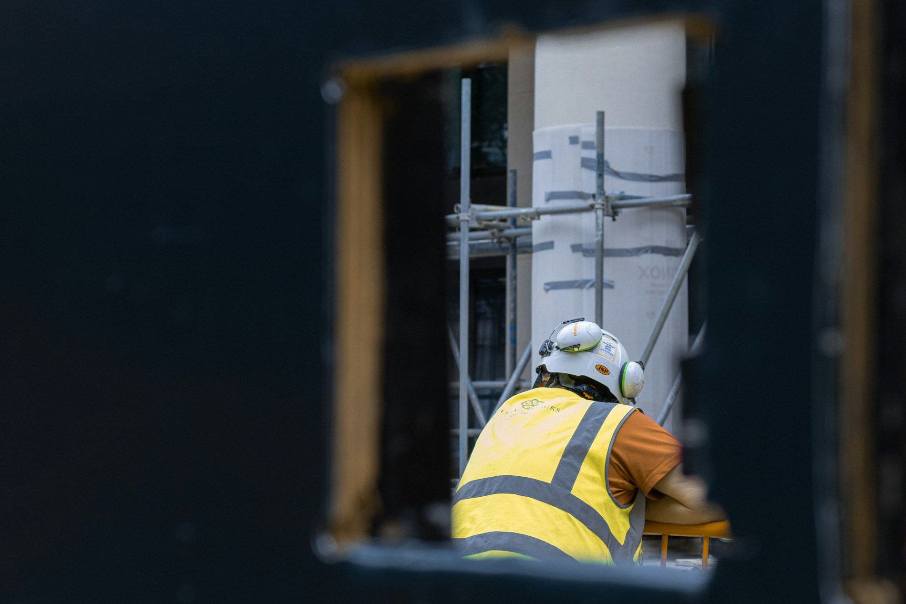
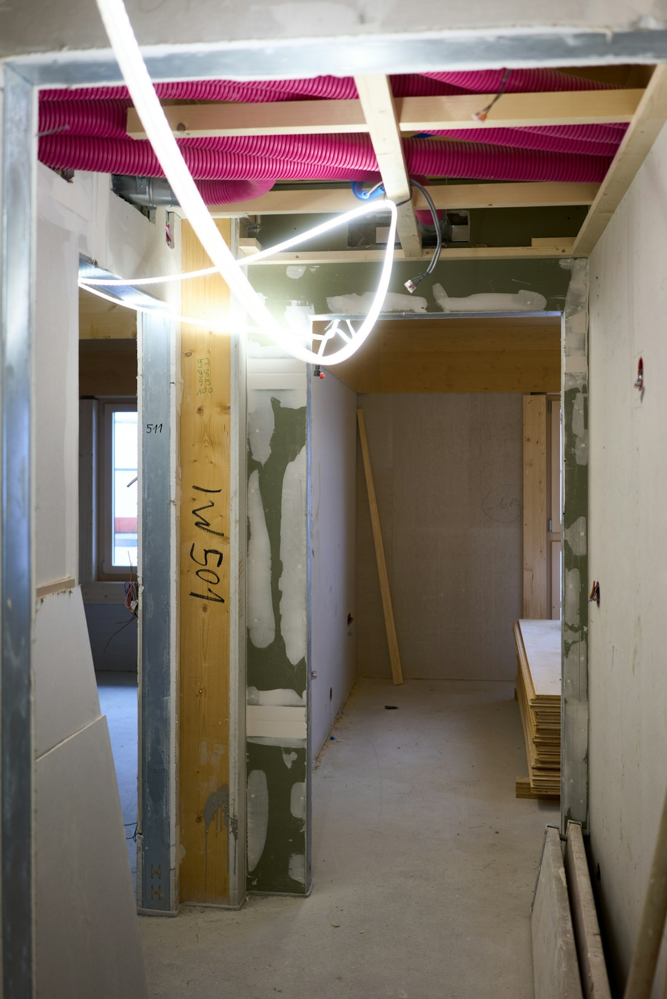

Inicio / Drywall
Drywall
Sistemas livianos de placa de yeso laminado: rápidos de montar, limpios de ejecutar y con un acabado que admite cualquier pintura sin sorpresas.
Servicio 02 · el principal
Pladur y drywall
son lo mismo
Pladur es una marca de placa de yeso laminado, igual que hay otras. El oficio se llama drywall, y es el que llevamos haciendo desde que empezamos: montar en seco lo que antes se levantaba con ladrillo, con menos peso, menos suciedad y mucha más precisión.
 Estructura
Estructura
Lo que se monta detrás
Una pared de drywall vale lo que vale su estructura. Perfilería del espesor correcto, modulación cada 40 o 60 centímetros según carga, refuerzos donde luego irá colgado un televisor o un mueble alto y bandas elásticas donde hay que cortar la transmisión del ruido.
Es la parte que nadie ve y la que separa un tabique que dura veinte años de uno que empieza a fisurar el primer invierno.
- Perfilería galvanizada de 48, 70 o 90 mm
- Refuerzos para cargas y muebles colgados
- Bandas elásticas en suelo y techo
- Paso de instalaciones previsto antes de cerrar
Trabajos
Qué montamos
Tabiques y divisiones
Separación de estancias, cierre de espacios diáfanos y divisiones de local con el aislamiento correcto dentro.
- Simple y doble placa
- Con lana mineral
- Refuerzo para cargas
Trasdosados
Forrado de paredes existentes para aislar del frío, del ruido o de la humedad, y para dejar una superficie recta donde no la había.
- Directos y autoportantes
- Corrección de desplomes
- Aislamiento incorporado
Techos continuos
Falsos techos lisos para ocultar instalaciones, bajar altura o crear focos de luz indirecta y cajeados de cortinas.
- Focos empotrados
- Luz indirecta perimetral
- Cajeados y regatas
Techos registrables
Sistemas desmontables de 60x60 para locales y oficinas, donde hay que acceder a la instalación cuando toque.
- Placa vinilo o fibra
- Perfilería vista u oculta
- Integración de luminarias
Anatomía del sistema
Lo que hay dentro
de una pared nuestra
Un tabique terminado es una superficie lisa y blanca: por fuera, todos parecen iguales. La diferencia está en las seis capas que ya no se ven. Pasa el ratón por cada una.
Placa de yeso laminado
12,5 o 15 mm según el sistema. Estándar en zonas secas, hidrófuga en baños y cocinas, ignífuga donde lo exige la normativa. Se puede montar a simple o a doble capa: doblar la placa añade masa y mejora el comportamiento acústico.
Perfilería metálica
Montantes galvanizados de 48, 70 o 90 mm colocados cada 40 o 60 centímetros según la altura y la carga. Es la estructura real del tabique: de su modulación depende que la pared no fisure.
Lana mineral
Rellena la cámara entre montantes. Absorbe el ruido aéreo que queda atrapado dentro del tabique y aporta aislamiento térmico. Una cámara hueca es el error más común y el más caro de corregir.
Banda elástica
Va bajo los canales, en todo el perímetro. Desacopla la estructura del forjado para que el ruido de impacto no viaje por el edificio. Cuesta poco y es lo que más se nota.
Refuerzo interior
Madera o chapa embebida en el tabique donde después irá colgado un televisor, un mueble alto o unos sanitarios. Se decide antes de cerrar: después implica abrir.
Tratamiento de juntas
Cinta y tres manos de pasta con lijado entre capas. Es la fase que marca el acabado final: si la luz va a incidir rasante sobre la pared, se trabaja un nivel superior.

MaterialCada placa en su sitio
No toda la placa sirve para todo. Poner la estándar en un baño es garantizar una reparación en dos años, y poner la ignífuga donde no hace falta es encarecer la obra sin motivo.
- Estándar — tabiques y techos en zonas secas
- Hidrófuga — baños, cocinas y lavaderos
- Ignífuga — cocinas de local, cuartos técnicos y salidas
- Alta dureza — pasillos y zonas de mucho tránsito
- Flexible — curvas, bóvedas y remates especiales
Ejecución
El acabado no se
improvisa al final
Replanteo
Se marca en suelo y techo la posición real de cada tabique y se contrasta contigo antes de atornillar nada.
Estructura y aislamiento
Perfilería, refuerzos, bandas elásticas y relleno de lana mineral. Aquí se decide el comportamiento acústico.
Cerrado y tratamiento de juntas
Atornillado con paso correcto, cinta y tres manos de pasta con lijado entre capas.
Nivel de acabado
Entregamos listo para imprimación y pintura. Si la luz incide rasante sobre la pared, se trabaja un nivel superior.
Dudas frecuentes
Lo que más nos preguntan
¿Pladur o drywall?
Es exactamente el mismo trabajo. Pladur es una marca comercial de placa de yeso laminado; drywall es el nombre del sistema constructivo y del oficio. Trabajamos con varias marcas y elegimos según lo que pida la obra.
¿Se pueden colgar muebles o un televisor?
Sí, siempre que se prevea antes de cerrar la pared. Colocamos refuerzos de madera o chapa en el interior del tabique en los puntos que nos indiques. Sin refuerzo, un tabique de placa aguanta cargas ligeras con taco específico, pero no un mueble alto cargado.
¿Cuánto se tarda?
Un tabique de una habitación normal se levanta en una jornada. El plazo real lo marca el tratamiento de juntas: entre manos de pasta hay que esperar secado. Una reforma tipo de vivienda suele estar entre una y tres semanas.
¿Ensucia mucho?
El montaje apenas genera polvo; el lijado de juntas sí. Trabajamos con protección de suelos y mobiliario y aspiración, y la obra se entrega recogida.
¿Se puede montar drywall en un baño?
Sí, con placa hidrófuga y el tratamiento adecuado en las zonas de salpicadura. Es una solución habitual y perfectamente válida cuando el material es el correcto.
Cuéntanos qué quieres montar
Un tabique, un techo o una reforma entera en seco. Mandanos fotos del espacio y te decimos qué sistema conviene y cuánto cuesta.